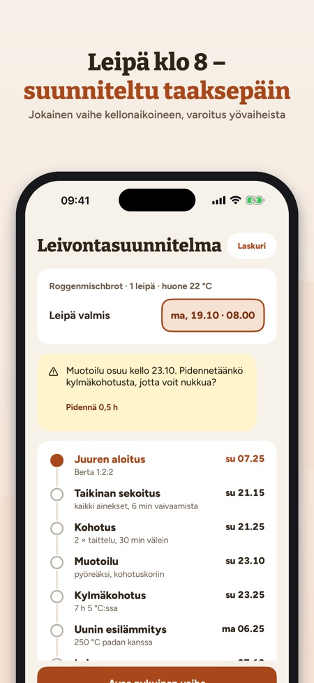
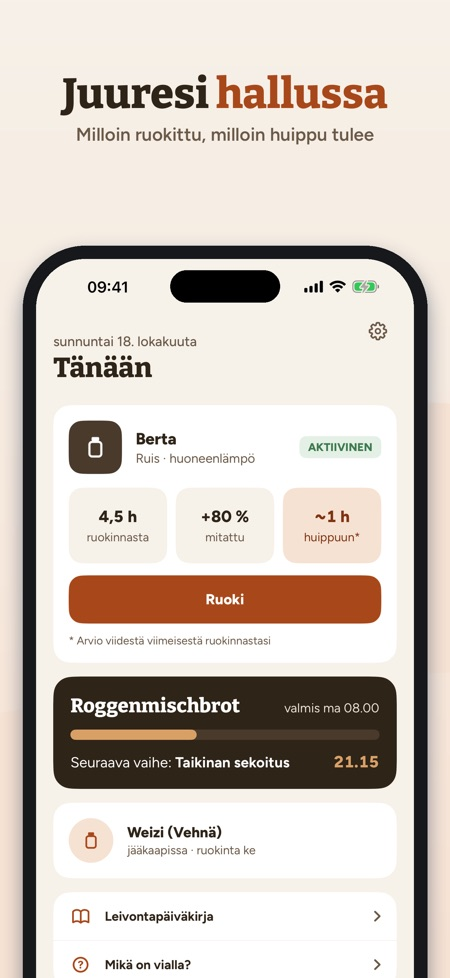
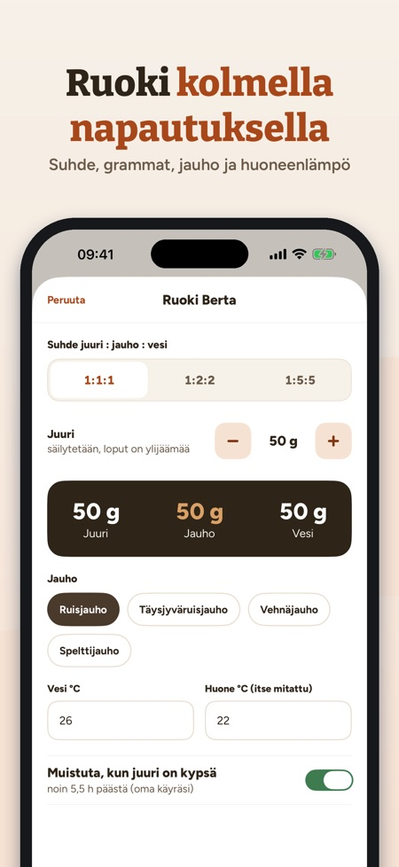

Ruoki juurta, ajoita leivonta. Leipä valmiina klo 8? Riseplan laskee taaksepäin, milloin aloittaa, sekoittaa ja taitella – ja varoittaa, jos vaihe osuu keskelle yötä.



Juuren paras kaveri: ruoki, suunnittele, leivo – kaikki grammoina ja °C.
JUURI
• Yksi tai useampi juuri (ruis, vehnä, speltti) ikineen ja ruokintoineen
• Ruoki kolmella napautuksella: suhde 1:1:1, 1:2:2 tai 1:5:5, grammat, jauho, veden ja huoneen lämpötila (itse mitattu)
• Muistutus, kun juuri on kypsä – oman käyräsi mukaan
• Jääkaappitila viikoittaisella muistutuksella
KOHOAMISKÄYRÄ
• Mittaa korkeus ruokinnan jälkeen ja näe oma käyräsi
• Keskimääräinen aika huippuun ja suurin tilavuus viimeisistä ruokinnoista
• Kuinka paljon nopeampi juuresi on lämpimässä huoneessa – omista tiedoistasi
LEIPURIN PROSENTTILASKURI
• Taikinan paino, vesiprosentti, juuri ja suola → jauhot, vesi, juuri ja suola grammoina
• Juuren jauhot ja vesi lasketaan mukaan
LEIVONTASUUNNITELMA TAAKSEPÄIN
• Valitse, milloin leivän pitää olla valmis – Riseplan laskee jokaisen vaiheen taaksepäin
• Kohotusajat mukautuvat huoneenlämpöösi (merkitty nyrkkisäännöksi)
• Varoitus, jos käsin tehtävä vaihe osuu hiljaiseen aikaasi, ja ehdotus pidemmästä kylmäkohotuksesta
• Muistutus jokaisesta vaiheesta
AKTIIVINEN VAIHE
• Iso ajastin, venytys- ja taittelulaskuri, seuraava vaihe näkyvissä
RESEPTIT
• Ruisleipä, Landbrot, Roggenmischbrot, Roggenbrot, Desembrood, Rågbröd/limpa, Grovbrød, Rugbrød, pizza ja letut ylijäämäjuuresta
• Oman maasi jauhojen nimet (esim. ruisjauho, vehnäjauho)
LEIVONTAPÄIVÄKIRJA JA APU
• Kuvat, tähdet ja muistiinpanot jokaisesta leivästä
• Mitä tehdä, kun pinnalla on nestettä, juuri ei kohoa, leipä on matala tai liian hapan? Homeessa: heitä pois.
OSTO
Ilman ostoa: yksi juuri, ruokinta, muistutukset, laskuri ja kolme reseptiä. Kertaosto avaa kaiken: useita juuria, kohoamiskäyrän, leivontasuunnitelman, aktiivisen vaiheen, kaikki reseptit ja leivontapäiväkirjan. Ei tilausta, ei mainoksia.
YKSITYISYYS
Tietosi pysyvät laitteella. Sovellus lähettää nimetöntä käyttötilastoa Google Analytics for Firebasen kautta (esim. käytetyt näkymät ja painikkeet, sovelluksen sisäiset ostot ja likimääräinen maa); mutta vain, jos kytket sen päälle aloituksessa tai asetuksista (oletuksena pois).